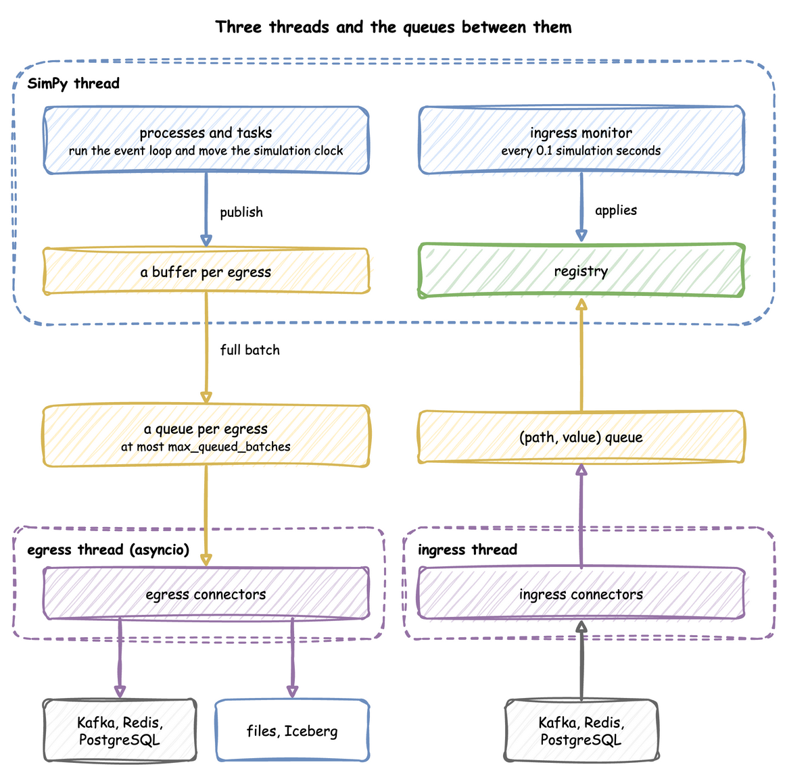

Time and Pacing
A run has two clocks, and a run can follow the wall clock, ignore it, or switch from one to the other. This page shows the clock settings, the warm-up, how long a run lasts, and which parts of the environment run on each thread.
What It Is
Simulation time is the number of seconds SimPy has advanced, starting at initial_time, 0 by default; every record carries it as sim_ts. Logical time is the date and time a record carries as timestamp: logical_start_time plus the simulation time. factor sets how simulation time relates to the wall clock, and go_live_at switches that relation once during a run. One hour of simulation time is one hour of logical time, and takes as long on the wall clock as factor says:

The settings are the same on DynamicRealtimeEnvironment, on SimulationContext and in the simulation section of a blueprint.
How to Use It
Logical Start Time
logical_start_time is the date and time that simulation time 0 maps to; without it, the run uses the moment the environment is created. A run with a backdated start writes history:
app = SimulationContext(
sim_id="Shop",
factor=0.0,
logical_start_time=datetime.now(timezone.utc) - timedelta(days=7), # a week
)
A datetime without an offset is read in the run's time zone, described next. In a blueprint it takes now, a signed duration such as -7d, or an ISO datetime, as YAML Blueprints describes.
Time Zone
timezone names the zone that record timestamps are written in, as an IANA name such as Australia/Melbourne. Every timestamp carries the offset of its moment, such as 2026-10-03T12:00:00.000+10:00, or +00:00 in UTC. By default the zone is that of logical_start_time when it has one, and UTC otherwise. A logical_start_time or go_live_at without an offset, now, and the default start are read in it:
The clock runs in UTC, so a daylight-saving change in the zone never adds or drops simulation time: in Melbourne, where the clocks went forward an hour on 4 October 2026, 24 hours of simulation from 12:00 on 3 October end at 13:00 on 4 October, 2026-10-04T13:00:00.000+11:00. A replayed timestamp without an offset is read in the zone too.
Factor
The wall-clock duration of a stretch of the run is its simulation duration times factor:
live = DynamicRealtimeEnvironment(factor=1.0) # 1 simulated second takes 1 real second
twice_as_fast = DynamicRealtimeEnvironment(factor=0.5) # takes half a real second
unpaced = DynamicRealtimeEnvironment(factor=0.0) # takes no real time at all
factor: 1.0follows the wall clock: a process that waits 5 simulation seconds waits 5 real seconds. It suits a live twin feeding a dashboard.factor: 0does not wait at all: the run goes as fast as the machine allows. It suits history, tests and experiments. Atfactor: 0, once nogo_live_atis pending, each event is processed by SimPy's ownEnvironment.step, without the real-time arithmetic, andstrictis not checked, as there is no wall clock to fall behind; before a pending go-live the real-time step runs, as it does after.
Go Live
factor applies until the logical clock reaches go_live_at, and from that instant the run is paced at one simulation second per real second. With a backdated logical_start_time and factor: 0, one run writes the history as fast as it can, then keeps going in real time:
go_live_at = datetime.now(timezone.utc)
env = DynamicRealtimeEnvironment(
factor=0.0, # until go_live_at
logical_start_time=go_live_at - timedelta(days=7),
go_live_at=go_live_at, # from here, 1 simulated second per real second
)
A sink with when: history receives the records stamped before go_live_at, and one with when: live the rest, so the two halves can go to different places:

Parquet History, Kafka Live builds such a run.
Lag
At a factor above 0 the run follows the wall clock, and system.simulation.lag_seconds says how many seconds it is behind, as telemetry. lag_interval sets how often, in simulation seconds or a duration. By default it is every simulation second at a factor above 0, and off at factor: 0, where the run is meant to be ahead of the wall clock; a run at factor: 0 that goes live starts it at the go-live instant. 0 turns it off:
Warm-up
warmup leaves the start of a run out of what it reports. It is one time per run, in simulation seconds or a duration. No sink receives a record or telemetry stamped before it, and the built-in statistics are reset once at that moment, so they describe the rest of the run. A run without it sends everything, which is what a data generator usually wants.
The warm-up is an argument of the sinks, because it is the sinks that leave records out: env.setup_egress(sinks, warmup=600). A run with no sink has nothing to leave out, and its statistics are reset at the warm-up as well when it is set through the builder.
The warm-up drops early records; go_live_at drops nothing and only decides which sink gets each one. Trusting Results shows how to choose a warm-up length.
Initial Time
initial_time is the reading of the simulation clock when the run starts, 0 when left out, in seconds or as a duration. A model of a shift that starts at 8 in the morning can start its clock at 8 hours, so every event time, every record's sim_ts and until read that clock; a record's timestamp is still logical_start_time plus sim_ts, to within the 1 millisecond by which a rounded sim_ts and a cut timestamp can differ:
until is a clock reading too, so a run with initial_time: 8 h and until: 16 h lasts 8 hours. A scenario step's at and the warmup are lengths of time from the start of the run instead, so with initial_time: 8 h a step at 30 min applies at 8.5 hours, and a warm-up of 10 min ends at 8 hours 10 minutes. The state the run starts with is declared beside it: a resource's current_cap, a container's level, a store's items and an arrival's attributes hold from the initial time, before the first arrival, and the tests check each against plain SimPy (SimPy Compatibility).
Run Length
until is in simulation seconds. run() and a blueprint's run.until also take a duration such as "10 min", "8 hours" or "1 week"; a month counts as 30 days and a year as 365.
app.add_resource("packers", current_cap=1, max_cap=1)
app.run(until="1 week") # 604,800 simulation seconds; a number is seconds too
The run stops at until before any event due at exactly that time, as SimPy's run(until=...) does: an order due at the horizon never arrives, and a task due to finish there stays unfinished. Statistics published at teardown read the model at until.
Without until, SimPy runs until no events remain, and a run with an arrival never runs out of events. Neither does any run with a sink or an ingress connector, even when its own work is done, because the environment's own processes repeat for as long as the run lasts. Give such a run an until, a stop or a drain, or stop it with Ctrl+C.
Stop Early
stop ends the run before until when something happens: {signal: name}, the next firing of a signal, or {condition: ...}, the first moment a condition holds, checked after every change of a level, a capacity, a registry value or a signal, and after every finished task. The builder's run(stop=...) also takes a signal's name, or a function of the context, called once the run is built, that returns any SimPy event, such as lambda context: context.env.timeout(30). The run ends at whichever comes first, stop or until, and no other event at that moment runs after it; when both fall at the same moment, until ends the run, as SimPy's own until would. In the low-level API it is SimPy's env.run(until=event).
Drain
A fixed horizon cuts the run at until with orders still in the shop. A drain stops the arrivals at until and keeps running until every entity in the model has left: drain: true, or drain: {limit: 1 h} to stop at the latest that long after until; desflow run --drain sets it from the command line. The environment's own processes, such as the statistics timer, never hold a drain open. The end-conditions example closes the shop at 120 seconds, drains for at most a minute, and stops at once if the boxes run out:
app.run(
# No new orders after closing time
until=120,
# Then pack the orders in the shop, for at most 60 seconds
drain={"limit": 60},
# Stop at once when the last box is taken
stop={"condition": "level.boxes == 0"},
)
context.stop_arrivals() stops the arrival loops by hand, as a drain does at until.
def run_to_end(env, shop, source):
"""Runs to closing time, then drains for at most 60 s, or until no boxes are left."""
out_of_boxes = env.event()
def check():
if shop["boxes"].level == 0 and not out_of_boxes.triggered:
out_of_boxes.succeed()
env.watch_changes(check)
# Closing time, unless the boxes run out first, which ends the run at once
env.run(until=env.timeout(120) | out_of_boxes)
if out_of_boxes.triggered:
return
source.interrupt() # no new orders after closing time
packed = env.all_of([p for p in shop["orders"] if p.is_alive])
env.run(until=packed | env.timeout(60) | out_of_boxes)
The low-level API writes a drain as SimPy does: interrupt the source process, then run until all the admitted processes end.
With statistics at basic or above, flows.<arrival>.started, finished and in_system say how many entities entered, left and are still in the model, and from minimal, tasks.<task>.in_progress how many instances of each task are queued or being served; End Conditions compares a fixed horizon with a drain.
Step and Peek
start() builds everything run() builds and starts every process, with the clock still at its start. step() then processes one event, and peek() gives the time of the next one, infinity when none is left, as SimPy's env.step() and env.peek() do. The event can be one of desflow's own, such as the statistics timer or a resource's capacity watcher, as well as one of the model's; finish() runs a started run on to the end run() would reach, until, the stop or the end of the drain, then closes it, so run() is start() then finish(); close() ends the run where it is. A context from from_yaml steps the same way:
def every_ten(context):
while True:
yield context.env.timeout(10)
stepped = SimulationContext(sim_id="Shop", factor=0.0).add_process(every_ten)
stepped.start() # builds everything run() builds; the clock is still at 0
while stepped.peek() < 30: # the time of the next event
stepped.step() # processes exactly one event
print(f"stopped before {stepped.peek()} at {stepped.env.now}")
stepped.close() # the teardown run() does at its end
It prints stopped before 30 at 20. Stepping does not stop at until: compare peek() with the time you want to stop at.
Example: End Conditions
The end-conditions example: a drain after closing time, a stop when the boxes run out, and the counts of orders still in the shop. It needs no Docker service and ends on its own.
Quick Start
desflow examples get downloads the example at the release you install, into a folder of its own. Pick uv or pip:
The whole file is examples/yaml/end_conditions.yaml.
Quick Start
desflow examples get downloads the example at the release you install, into a folder of its own. Pick uv or pip:
The whole file is examples/builder/end_conditions_example.py.
Quick Start
desflow examples get downloads the example at the release you install, into a folder of its own. Pick uv or pip:
The whole file is examples/low-level/end_conditions_example.py.
How It Works
What the environment holds. A DynamicRealtimeEnvironment is SimPy's RealtimeEnvironment with four additions: the registry at env.registry, the ingress connectors, the egress connectors with their buffers, and the statistics at env.stats.
Threads. A run uses three threads, with queues between them. Records flow from the processes to the sinks, and parameter changes flow from the sources to the registry:

- SimPy thread: runs the model. When a process publishes a record, the record goes into a buffer for each sink, and a full buffer is handed to that sink's queue.
- Egress thread: runs the sinks' asyncio code, which drains the queues and writes to Kafka, files or databases, so network waits never stall a simulation step.
- Ingress thread: runs the sources, which put
(path, value)pairs on a queue.
Processes it starts. Besides your own, the environment starts an ingress monitor, which applies queued changes every 0.1 simulation seconds; a lag monitor, which publishes system.simulation.lag_seconds every lag_interval, at a factor above 0 or after going live; a timed flush per sink, at a factor above 0; the statistics timer; and the warm-up reset.
Pacing and the switch. Before each event, step checks the logical clock. At the first event at or after go_live_at, it sets the factor to 1.0 and moves its two anchors, env_start and real_start, so the go-live instant counts as now; without that, the first paced event would sleep off the whole backfill. The switch happens once and always to 1.0. A go_live_at at or before logical_start_time paces the whole run, with a warning, and a run that ends before it stays unpaced. A go_live_at or logical_start_time without an offset is read in the run's time zone, so the two can be compared whichever way each is written.
The end of the model and the end of the run. The model ends when the clock stops: at until, at a stop, or when a drain empties the model. The run ends after that, at close(), which run() calls in a finally block: it publishes the last statistics, still at the time the model ended, flushes and stops the egress connectors, then stops the ingress connectors. A sink may take a while to drain its queue, but no record it receives is later than the model's end.
SimPy and desflow. SimPy's RealtimeEnvironment takes one factor for the whole run and, with strict=True, raises an error when the model falls behind the wall clock. desflow runs without waiting at factor: 0, switches to real time at go_live_at, stamps every record with a logical time, and by default reports falling behind as telemetry; with strict=True it raises, as SimPy's does. SimPy and desflow compares the two.
Stability and Limits
- A run with a sink or ingress needs
until, or Ctrl+C, as Run Length explains. - At
factor: 0no timed flush runs, so records leave a buffer when it reachesbatch_sizeand at teardown, as Egress explains.LocalIngressfollows the wall clock, so its changes can land after an unpaced run has ended; a scenario follows the simulation clock. Nosystem.simulation.lag_secondsis published unlesslag_intervalis set, and it reports 0 while the run is ahead of the wall clock. warmupdrops,go_live_atroutes. Records before a warm-up are gone; records beforego_live_atgo to the sinks that take history.- A model slower than the wall clock falls behind at
factor: 1.0and does not catch up by skipping events;lag_secondsshows by how much.